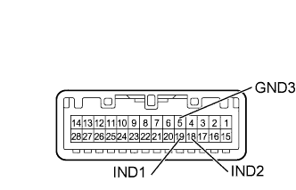

G-BOOK SYSTEM > Emergency Call Switch Indicator Circuit |
| 1.CHECK HARNESS AND CONNECTOR (TELEMATICS TRANSCEIVER - MAP LIGHT) |
Disconnect the G56 telematics transceiver connector.
Disconnect the W7 map light assembly connector.
Measure the resistance according to the value(s) in the table below.
| Tester Connection | Condition | Specified Condition |
| G56-11 (IND1) - W7-19 (IND1) | Always | Below 1 Ω |
| G56-12 (IND2) - W7-18 (IND2) | Always | Below 1 Ω |
| G56-11 (IND1) - Body ground | Always | 10 kΩ or higher |
| G56-12 (IND2) - Body ground | Always | 10 kΩ or higher |
|
| ||||
| OK | |
| 2.INSPECT MAP LIGHT ASSEMBLY |
Remove the map light assembly (Click here).
Connect 2 dry-cell batteries in series.
|  |
Connect the positive (+) lead from the batteries to terminal W7-19 (IND1) or W7-18 (IND2), and the negative (-) lead from the batteries to terminal W7-5 (GND3) of the map light assembly connector.
Check if the illumination for the emergency call switch comes on.
| Measurement Condition | Specified Condition |
| Battery positive (+) → W7-19 (IND1) Battery negative (-) → W7-5 (GND3) | Red indicator comes on |
| Battery positive (+) → W7-18 (IND2) Battery negative (-) → W7-5 (GND3) | Green indicator comes on |
|
| ||||
| OK | ||
| ||